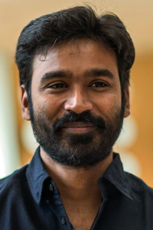

Dhanush
Dhanush (real name: Venkatesh Prabhu Kasthuri Raja) is one of the most popular actors in Indian cinema, especially in the Tamil film industry. He is also a director, producer, lyricist, and playback singer.
Dhanush Wikipedia
Popular Movies of Dhanush
- Thulluvadho Ilamai — Director: Kasthuri Raja
- Kaadhal Kondein — Director: Selvaraghavan
- Pudhupettai — Director: Selvaraghavan
- Polladhavan — Director: Vetrimaaran
- Yaaradi Nee Mohini — Director: Mithran R. Jawahar
- Aadukalam — Director: Vetrimaaran
- 3 — Director: Aishwarya Rajinikanth
- Velaiilla Pattadhari (VIP) — Director: Velraj
- Maari — Director: Balaji Mohan
- Kodi — Director: R. S. Durai Senthilkumar
- Vada Chennai — Director: Vetrimaaran
- Asuran — Director: Vetrimaaran
- Karnan — Director: Mari Selvaraj
- Thiruchitrambalam — Director: Mithran R. Jawahar
- Vaathi — Director: Venky Atluri
- Captain Miller — Director: Arun Matheswaran
- Raayan — Director: Dhanush
Created By Shankari